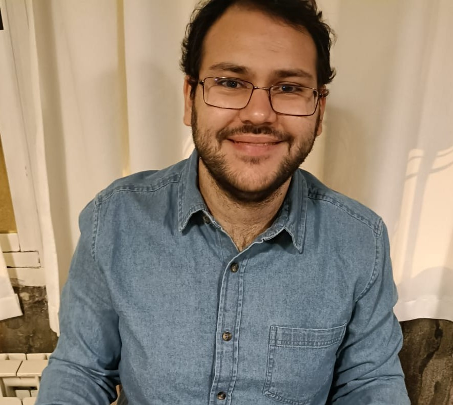

Hola, soy
Martín Franco
|
Desarrollador enfocado en crear soluciones tecnológicas eficientes. Combino mi formación en Ingeniería Informática y Desarrollo de Videojuegos para dar vida a ideas creativas.
Sobre Mí _
Soy una persona trabajadora, proactiva, con excelentes habilidades en resolución de problemas y trabajo en equipo. Busco aportar valor creando software innovador. Además de mi pasión por la programación, tengo conocimiento general en otras áreas de cuidado que reflejan mi curiosidad constante.
Idiomas: Castellano (Nativo), Valenciano (Nativo), Inglés (Medio).
Habilidades Técnicas
Soft Skills
Trayectoria _
Educación
Grado en Diseño y Desarrollo de Videojuegos
Universitat Jaume I (Castellón de la Plana)
Ingeniería Informática
Universitat Jaume I (Castellón de la Plana)
Bachillerato Científico
IES Veles e Vents (Grao de Gandia)
Experiencia Laboral
Educador de Apoyo
Programa Pisos Solidarios UJI. Apoyo escolar y dinámicas de grupo integradoras en entorno educativo.
Repartidor de Amazon
Instapack (Onda). Trabajo bajo presión, usando apps logísticas y resolviendo problemas en tiempo real.
Runner
Solmarket (Grao de Castellón). Logística, abastecimiento constante, gestión de stock y atención al cliente en entorno de alta afluencia.
Presidente
Club de Juegos de Mesa de la UJI. Organización de eventos y presupuestos. Liderazgo de equipo.
Encargado de Tienda
Piscolabis By Gabriela. Gestión integral, control TPV e inventario, equipo de 3 personas.
Proyectos Destacados _
Anime Tracker API (AnimeNexus.es)
Desarrollo completo de la lógica de servidor en Python con FastAPI. Modelado de datos rígido, SQLite, JWT y hashes Bcrypt.
Desarrollo Videojuegos UJI
Creación y programación de proyectos de juegos como parte del plan de estudios.
Contacto
Si te interesa mi perfil para un proyecto, oferta de empleo o quieres conocerme más, no dudes en contactarme.